HOF · Paciente Modelo São Paulo
Os anúncios ativos de 16 concorrentes da região (Vila Olímpia, Itaim, Moema e Campo Belo), tirados da Biblioteca de Anúncios da Meta: quem também está chamando paciente modelo, quanto as clínicas cobram pelo botox no anúncio e o que vale observar em cada página. É referência para os próximos criativos do Paciente Modelo SP.
Lemos 167 anúncios, entre os 177 que estas páginas mantêm ativos hoje. Três números resumem como esse mercado anuncia:
São a prova mais forte de que o formato funciona.
Pelo menos 3 outros dias de paciente modelo estão chamando gente na mesma região agora: 14–15/11, 26–28/11 e a Heloísa com 32 anúncios. É disputa pelo mesmo público, e ajuda a explicar o custo por conversa alto da primeira semana.
Heloísa Froís, Murillo Cecilio, Carmen Vinagre, Carmen Barge, Érika MendesOs concorrentes de paciente modelo não mostram preço: prometem “só o custo” e deixam a conta para o WhatsApp. O nosso R$537 com 6x é o único número claro da categoria.
Heloísa Froís, Murillo Cecilio, Carmen BargeQuem anuncia botox normal no bairro põe o preço parcelado na arte: 10x R$69,90 (R$699), 10x R$74 (R$740 na Black), R$799 a sessão, 12x R$199,99 no pacote do ano.
Botocenter, Botoclinic, Solum, InnovaTrês clínicas de Moema vendem botox o ano inteiro (3 aplicações) em vez de uma aplicação. A Black Friday veio por cima disso.
Botocenter, Solum, InnovaJá tem “de/por”, 30% e 50% OFF e bônus (botox grátis acima de 8 ml, 1 ml de brinde no plano anual). Novembro vai ficar mais caro de anunciar na região.
Botoclinic, Solum, Hudson Oliveira, Ami, BotocenterO argumento que mais se repete é de naturalidade e identidade: “não é parecer outra pessoa”, “sem deixar de parecer você”, “nada grita”.
Heloísa Froís, Cori Clinic, Érika Mendes, Botocenter“📍 Vila Olímpia – Zona Sul”, “📍 EM MOEMA, SÃO PAULO!”, “Moema e região”: o endereço vem antes da oferta.
Heloísa Froís, Solum, Innova, Hudson Oliveira01
Biomédica · paciente modelo na Vila Olímpia · a maior operação do grupo
Biblioteca de anúncios ↗ Página no Facebook ↗
Harmonização não é parecer outra pessoa. O que virou moda por aí deixou muita gente com o mesmo rosto. O Método SOU é o oposto: um estudo exclusivo, feito para um único…
Botão: WhatsApp ver anúncio ↗
Seja minha Paciente Modelo e PAGUE APENAS O CUSTO! Ultima chamada para fazer sua Harmonização Facial pagando somente o valor de custo do material? 📍 Vila Olímpia – Zona…
Botão: WhatsApp ver anúncio ↗
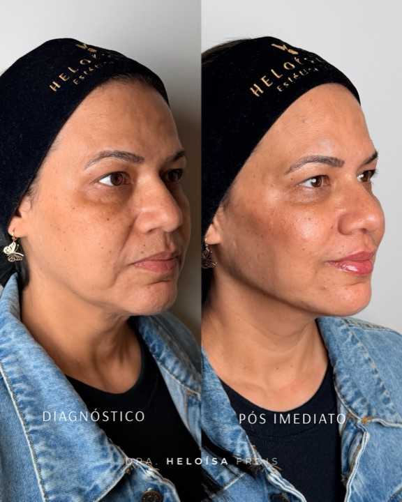
Esse resultado fez sucesso no story então merece vir para o feed também! Naturalidade, proporção e sofisticação em cada detalhe. Esse é o objetivo da reestruturação…
Botão: WhatsApp ver anúncio ↗
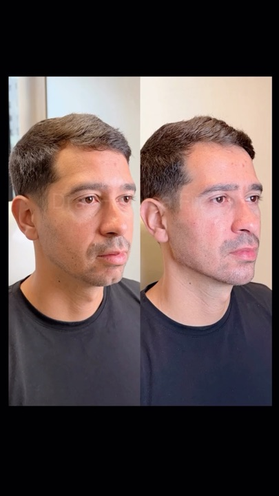
O medo era ficar artificial. O resultado foi o contrário: mais presença, mais segurança e um rosto que continua sendo dele. Harmonização masculina bem feita não grita…
Botão: WhatsApp ver anúncio ↗
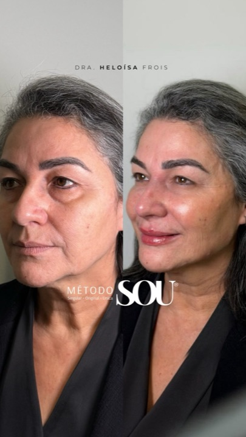
A Vânia chegou com um desejo muito claro: rejuvenescer sem perder a própria identidade. Por isso, construímos um plano personalizado, associando o método SOU -…
Botão: WhatsApp ver anúncio ↗
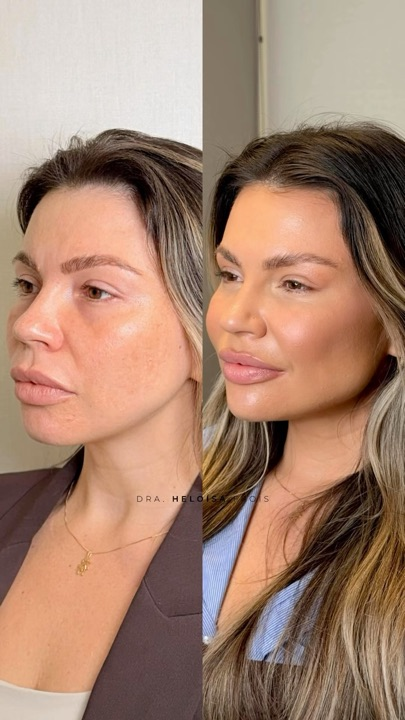
Mais do que transformar um rosto, o objetivo é devolver aquela sensação gostosa de se olhar no espelho e se reconhecer ainda mais bonita. Um resultado pensado para…
Botão: WhatsApp ver anúncio ↗
02
Seleção de paciente modelo · Vila Olímpia · 26, 27 e 28 de novembro
Biblioteca de anúncios ↗ Página no Facebook ↗
03
Imersão para profissionais com pacientes modelo · Vila Olímpia · 13 a 15 de novembro
Biblioteca de anúncios ↗ Página no Facebook ↗
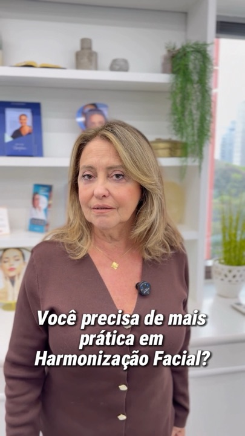
Quer ganhar mais prática e segurança nos seus atendimentos em HOF? A Imersão em Harmonização Facial são 3 dias de aprendizado, sendo 1 dia de teoria + 2 dias de prática…
Botão: WhatsApp ver anúncio ↗
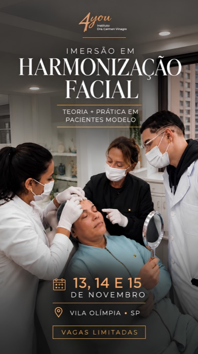
Mais prática, acompanhamento de perto e pacientes modelo para você aprimorar suas técnicas em HOF. São 3 dias de Imersão em Harmonização Facial: teoria + dois dias…
Botão: WhatsApp ver anúncio ↗
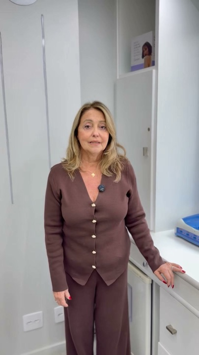
Quer realizar procedimentos de Harmonização Facial com condições especiais? Nos dias 14 e 15 de Novembro, vou selecionar pacientes modelo para toxina botulínica,…
Botão: WhatsApp ver anúncio ↗
04
Clínica de estética avançada · paciente modelo full face e perfiloplastia
Biblioteca de anúncios ↗ Página no Facebook ↗
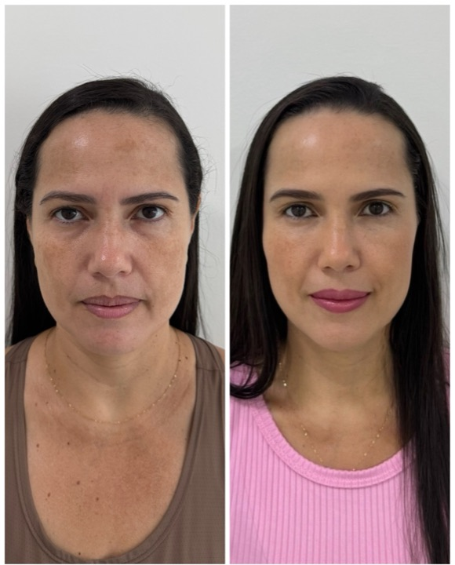
“Você não precisa de harmonização facial. Você MERECE.” A harmonização é uma construção. Não é sobre mudar o rosto da noite para o dia… é sobre evolução, construção e…
Botão: Perfil do Instagram ver anúncio ↗
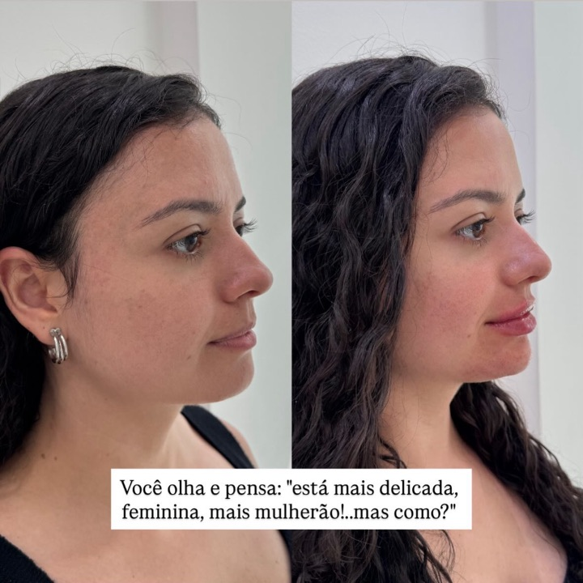
Você olha e pensa: “está mais delicada, feminina, mais mulherão... mas o que foi feito?” E é exatamente assim que a harmonização facial de excelência funciona. Nada…
Botão: Perfil do Instagram ver anúncio ↗
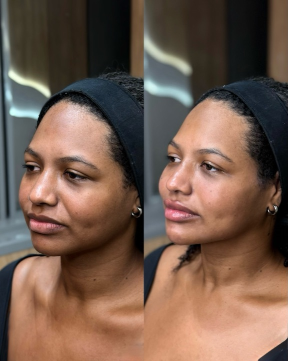
“Dra., eu sinto meu rosto muito redondo.” Essa é uma queixa que vai muito além de simplesmente querer um rosto mais fino. Às vezes, o que incomoda é se olhar em uma foto…
Botão: Perfil do Instagram ver anúncio ↗
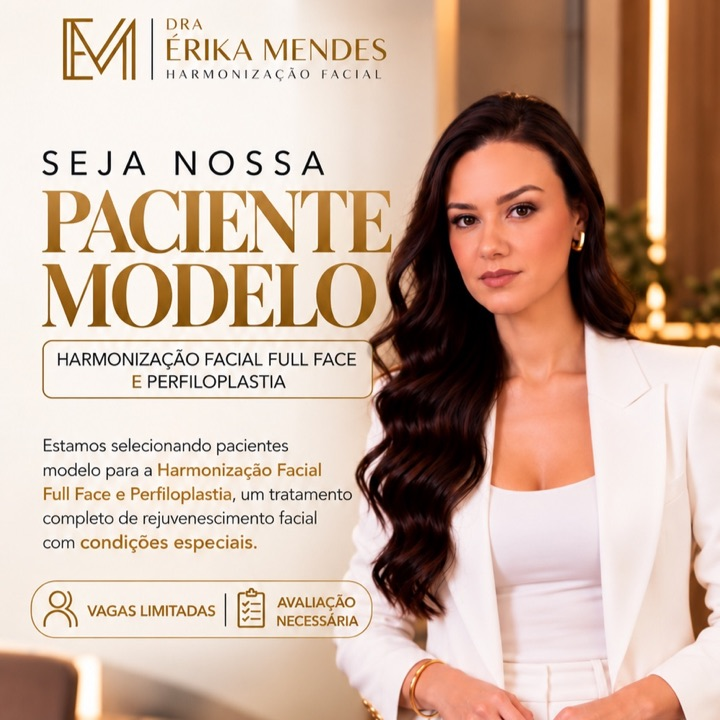
SELEÇÃO DE PACIENTE MODELO Estamos selecionando pacientes modelo para tratamentos de Harmonização facial full face e perfiloplastia. Se você deseja realçar sua beleza…
Botão: WhatsApp ver anúncio ↗
05
Paciente modelo no Itaim Bibi (Rua Joaquim Floriano)
Biblioteca de anúncios ↗ Página no Facebook ↗
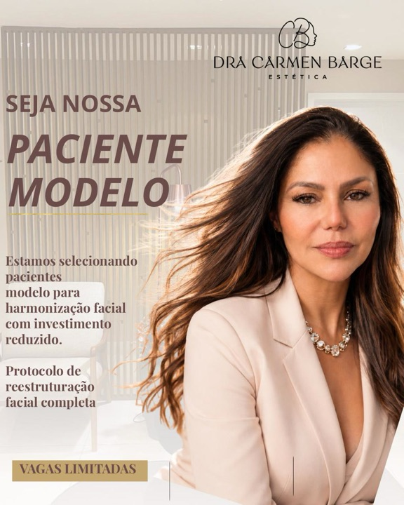
Estamos selecionando pacientes modelo para tratamentos de estética avançada. Se você deseja realçar sua beleza com acesso aos meus protocolos, técnicas modernas,…
Botão: WhatsApp ver anúncio ↗
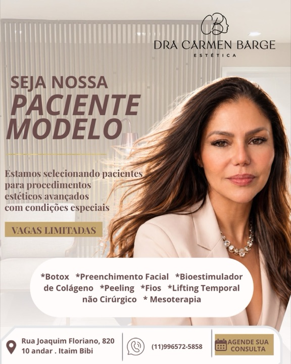
SELEÇÃO ABERTA PARA PACIENTES MODELO Estou selecionando algumas mulheres que desejam realizar procedimentos estéticos com condições especiais, dentro de um planejamento…
Botão: WhatsApp ver anúncio ↗
06
Harmonização full face e rinomodelação · Moema · mentoria com paciente modelo
Biblioteca de anúncios ↗ Página no Facebook ↗
Esse é o poder de um nariz harmônico! A rinomodelação não só realça o nariz, mas transforma todo o seu perfil. 🎨🖌️ tudo isso sem cirurgia, sem dor e com resultado…
Botão: WhatsApp ver anúncio ↗
Tão natural quanto a luz do dia😂😍 Preenchimento labial de forma natural! Hidratação Contorno Volume Resultado lindo Quer saber mais? (Link na bio)
Botão: WhatsApp ver anúncio ↗
Harmonização vai muito além de técnicas como preenchimento ou botox. É sobre analisar proporções, entender necessidades individuais e conectar cada detalhe com intenção.…
Botão: WhatsApp ver anúncio ↗
Paciente dos 🇺🇸 confiando em um planejamento facial individualizado. Harmonização facial bem executada não chama atenção pelo excesso… e sim pela naturalidade. Mandíbula…
Botão: WhatsApp ver anúncio ↗
Estamos nos últimos dias para a Mentoria Full Face 2026 e você pode viver essa experiência como paciente modelo‼️ Digite “modelo” nos comentários e receba mais…
Botão: WhatsApp ver anúncio ↗
Já pensou em melhorar seu perfil com apenas um procedimento? Com a rinomodelação, é possível harmonizar seu nariz sem cortes, sem cirurgia e de forma rápida e segura. 👉…
Botão: WhatsApp ver anúncio ↗
07
Rede de botox · unidade Campo Belo/Moema
Biblioteca de anúncios ↗ Página no Facebook ↗
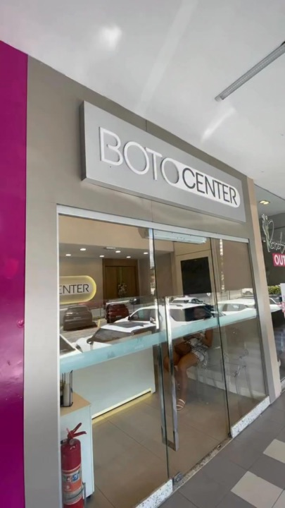
🚨 O bigode chinês não precisa marcar sua expressão antes do tempo. Com nossa técnica exclusiva de preenchimento, conseguimos suavizar os sulcos de forma estratégica,…
Botão: WhatsApp ver anúncio ↗
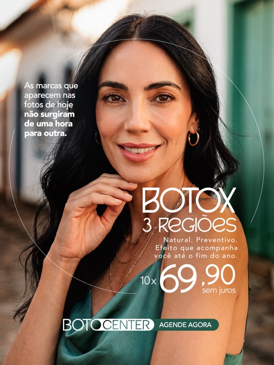
Botox natural e duradouro por 10x de R$ 69,90 💉✨ Sem cara de “botox”: resultados que valorizam você e preservam sua naturalidade. 🤩 Clique e fale conosco no WhatsApp 👇
Botão: WhatsApp ver anúncio ↗
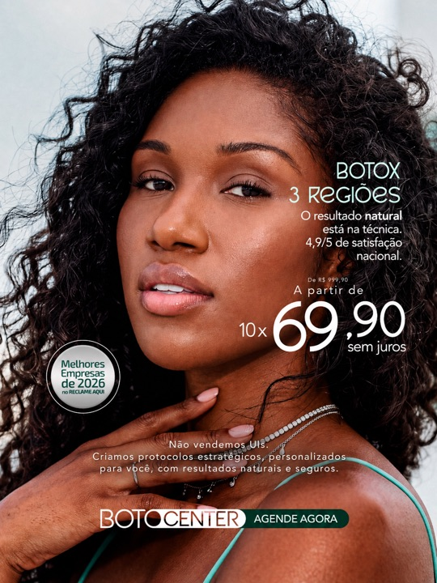
Botox 3 regiões é cuidado completo 💉✨ Suavize linhas da testa, entre as sobrancelhas e pés de galinha, mantendo a naturalidade e a expressão do seu rosto 🤍
Botão: WhatsApp ver anúncio ↗
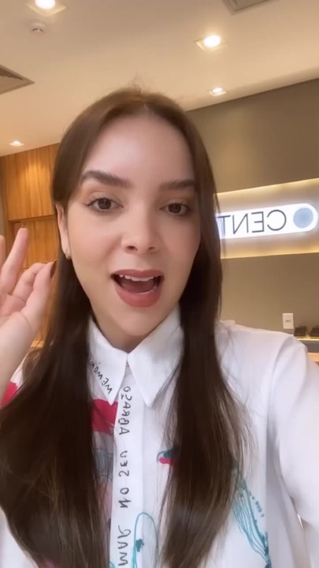
✨ BOTOX O ANO TODO✨ Chega de deixar o Botox vencer 😍💉
Botão: Agendar ver anúncio ↗
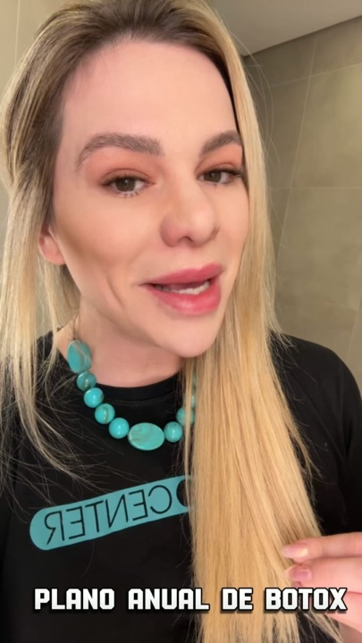
🚨 BEAUTY FRIDAY BOTOCENTER MOEMA Essa condição tá boa demais pra passar batido 👀✨ Comprando o Plano Anual de Botox, você GANHA 1 ml de preenchimento para escolher entre:…
Botão: Agendar ver anúncio ↗
08
Rede de botox · unidade Itaim Bibi
Biblioteca de anúncios ↗ Página no Facebook ↗
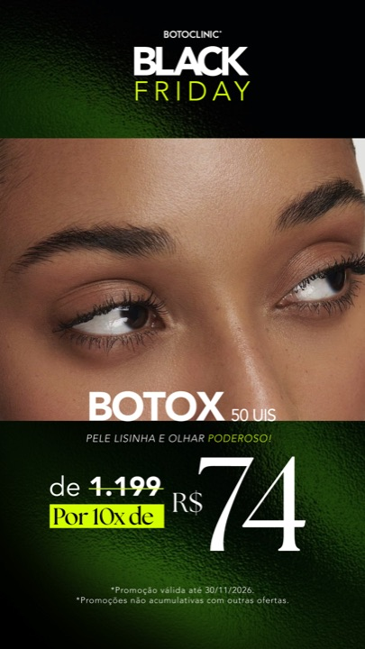
Black Friday Botoclinic: Botox 50 UIs de R$ 1.199 por 10x de R$ 74. Pele lisinha e olhar poderoso. Promoção válida até 30/11/2026. Não cumulativa com outras ofertas.…
Botão: WhatsApp ver anúncio ↗
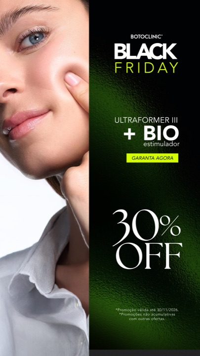
Black Friday Botoclinic: Ultraformer III + bioestimulador com 30% OFF. Ultrassom microfocado com bioestimulador para firmeza e qualidade da pele. Promoção válida até…
Botão: WhatsApp ver anúncio ↗
09
Clínica de estética · Moema
Biblioteca de anúncios ↗ Página no Facebook ↗
10
Clínica integrada · Moema
Biblioteca de anúncios ↗ Página no Facebook ↗
📍 Moema e região: um ano de cuidado com a sua beleza por 12x de R$ 199,99! ✨ Suavizar as linhas de expressão com um planejamento que respeita seus traços: essa é a…
Botão: WhatsApp ver anúncio ↗
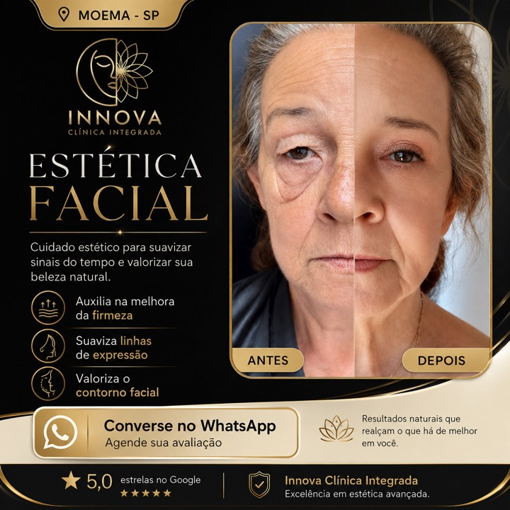
✨ Sua pele pode recuperar firmeza, viço e uma aparência mais rejuvenescida sem perder a naturalidade. Na Innova Clínica Integrada, criamos um protocolo de estética…
Botão: WhatsApp ver anúncio ↗
11
Harmonização · Moema, Paulista e Tatuapé
Biblioteca de anúncios ↗ Página no Facebook ↗
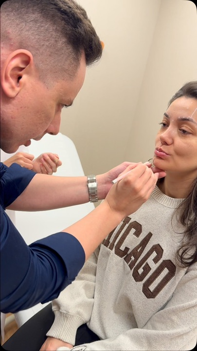
Um pouco do nosso dia a dia de cuidados com nossas pacientes queridas 🙏
Botão: Perfil do Instagram ver anúncio ↗
HARMONIZAÇÃO FACIAL FULL FACE + BOTOX (BÔNUS) ✨ BLACK FRIDAY - OFERTA LIMITADA ✨ 💰 DE 1.200,00 POR 600,00 - CADA ML 🎁 ACIMA DE 8 ML GANHE APLICAÇÃO DE BOTOX SERÁ…
Botão: WhatsApp ver anúncio ↗
12
Estética integrativa · Itaim Bibi
Biblioteca de anúncios ↗ Página no Facebook ↗
13
Clínica de harmonização · aparece na busca da Vila Olímpia
Biblioteca de anúncios ↗ Página no Facebook ↗
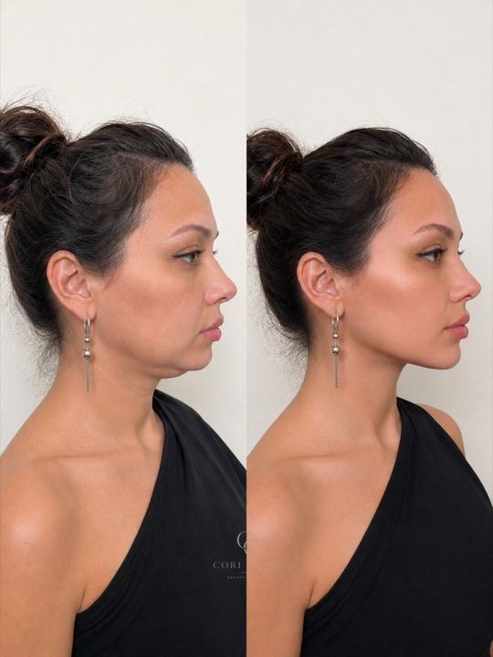
Harmonização facial não é sobre mudar quem você é. É sobre valorizar seus traços, equilibrar proporções e recuperar a confiança ao se olhar no espelho. Este é um dos…
Botão: Perfil do Instagram ver anúncio ↗
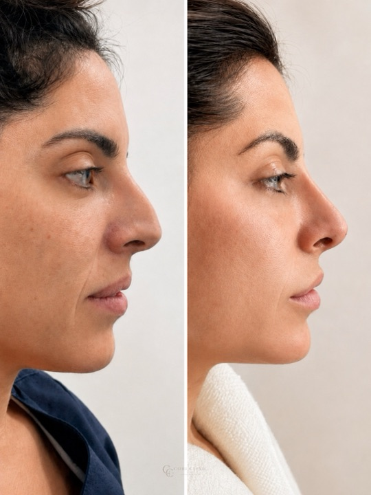
Um contorno mais definido, sem deixar de parecer você. Este caso começou com uma avaliação cuidadosa das estruturas faciais, da qualidade da pele e do que a paciente…
Botão: Perfil do Instagram ver anúncio ↗
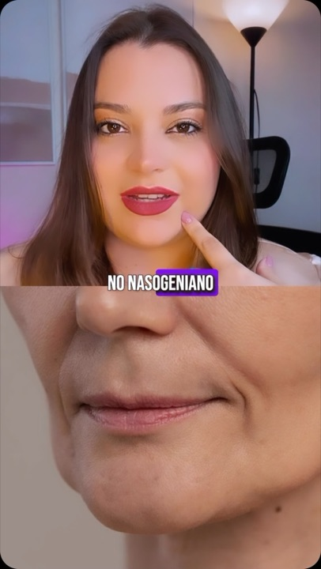
Aposto que você já fez, ou conhece alguém que já tentou preencher o famoso bigode chinês (nasogeniano) e não teve o resultado bem sucedido. Essa região não…
Botão: Perfil do Instagram ver anúncio ↗
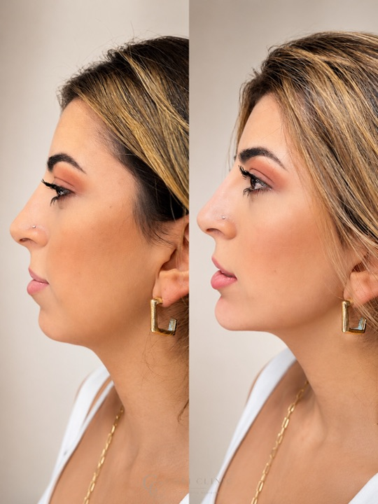
Um perfil mais definido, sem deixar de parecer você. Este caso começou com uma avaliação cuidadosa das estruturas faciais, da qualidade da pele e do que a paciente…
Botão: Perfil do Instagram ver anúncio ↗
Às vezes, não é sobre mudar o rosto. É sobre olhar no espelho e sentir que a sua imagem finalmente representa quem você se tornou. Camila Ayumi Kado buscava um rosto…
Botão: Perfil do Instagram ver anúncio ↗
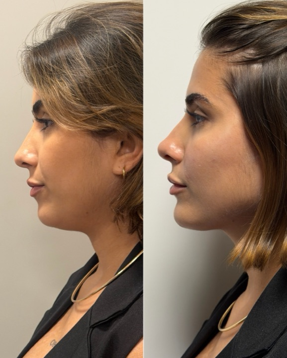
Pequenos detalhes que fazem toda a diferença no perfil 🫶🏻✨
Botão: Perfil do Instagram ver anúncio ↗
14
Beauty Face Clinic · aparece na busca “botox vila olímpia”
Biblioteca de anúncios ↗ Página no Facebook ↗
15
Estética masculina · Hauss Clinic, Rua Helena, Vila Olímpia
Biblioteca de anúncios ↗ Página no Facebook ↗
16
Clínica odontológica · Vila Olímpia
Biblioteca de anúncios ↗ Página no Facebook ↗
🤍 Já conhece as possibilidades da harmonização facial? Cada planejamento deve considerar as características individuais do rosto e os objetivos de cada pessoa. Na Hub…
Botão: WhatsApp ver anúncio ↗
✨ Sua beleza merece um cuidado especial! A harmonização facial pode ser uma possibilidade para quem busca valorizar os traços do rosto com naturalidade e equilíbrio. Na…
Botão: WhatsApp ver anúncio ↗
Estático e vídeo no formato da nossa 04 (mapa): a pergunta no topo, a faixa de preço que as clínicas do bairro anunciam (R$699 a R$1.199, sem nome de ninguém) e, embaixo, toxina R$537 em 6x como paciente modelo, com supervisão. É o único número claro da categoria; usamos a favor.
Variação da 03 (a que mais converteu): manter o checklist e trocar o fundo por um antes e depois de perfil, natural, com a frase “ninguém percebe, só acham que você descansou”. Responde o medo de ficar artificial, que é o gancho de quase todo concorrente.
Cartaz da 01 (procura-se) com “📍 Vila Olímpia · dia X/11 · vagas limitadas” logo no topo, antes de qualquer outra coisa, e a explicação curta: “quem aplica são profissionais em formação, com supervisão do professor do começo ao fim”. Os outros 3 dias de paciente modelo do bairro já explicam isso; a gente precisa da data para não parecer mais um.